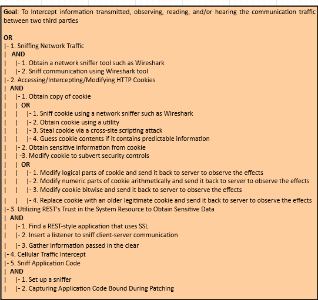
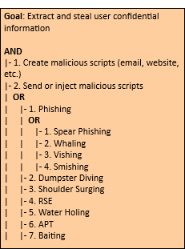
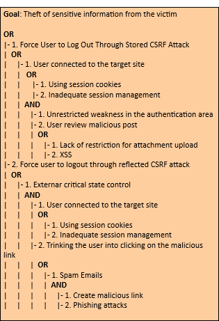
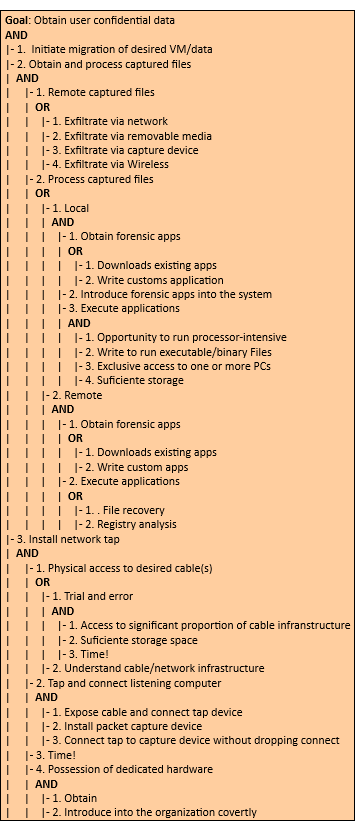
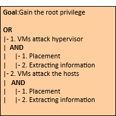

| Mobile Plataform | IoT System |
| Application domain type | Smart Agriculture |
| Authentication | Yes |
| Authentication schemes | ID-based authentication |
| Has DB | Yes |
| Type of data storage | Local Storage |
| Which DB | |
| Type of data stored | Personal Information ; Confidential Data |
| User Registration | Yes |
| Type of Registration | The users will register themselves |
| Programming Languages | C/C++ |
| Input Forms | No |
| Upload Files | No |
| The system has logs | Yes |
| The system has regular updates | Yes |
| The system has third-party | Yes |
| System Cloud Environments | Hybrid Cloud |
| Hardware Specification | Yes |
| HW Authentication | Basic Authentication (user/pass) |
| HW Wireless Tech | 5G ; 3G ; 4G/LTE ; Bluetooth ; Wi-Fi |
| Data Center Phisical Access | Yes |
In this type of attack an active man listen and change communications between Mobile Device and Cloud. In other hand, in this attack an intruder enters in the ongoing conversation between sender and the receiver and makes them believe that conversation is taking place between them only.
This type of attack occurs whenever an attacker intends to intercept communications in order to interpret or alter the original data in transit between the sender and the receiver establishing a conversation.
The attacker generally and depending on whether the communication situation is encrypted or not, is able to modify the cryptographically unprotected communication or modify the cryptographically protected communication. More specifically, it will have the following powers:
To ensure that the mobile application is resilient or immune to malicious MitM attacks, it is recommended that the measures described in the good practice report and the security tests present in the full report are followed to ensure authenticity, integrity, privacy and authenticity of the data.
This type of attack consists in trying to access a system using some mechanism or simply using trial-and-error, aiming to guess the password of a legitimate user of that system. The success of this attack depends largely on the cryptographic scheme used for authentication and access control to the system, as well as the nature of the password set by the legitimate user.
In this attack, some asset, namely, information, functionality, identity, etc., is protected by a finite secret value. The attacker attempts to gain access to this asset by using trial-and-error to exhaustively explore all the possible secret values in the hope of finding the secret (or a value that is functionally equivalent) that will unlock the asset. Examples of secrets can include, but are not limited to, passwords, encryption keys, database lookup keys, and initial values to one-way functions. The key factor in this attack is the attackers' ability to explore the possible secret space rapidly. This, in turn, is a function of the size of the secret space and the computational power the attacker is able to bring to bear on the problem. If the attacker has modest resources and the secret space is large, the challenge facing the attacker is intractable. Assuming a finite secret space, a brute force attack will eventually succeed. The defender must rely on making sure that the time and resources necessary to do so will exceed the value of the information.
This type of attack can be carried out in two different ways: 1. Encryption Brute Forcing; 2. Password Brute Forcing.
In order to mitigate the Brute Force type attacks it is convenient to follow the good practice guidelines, aiming at incorporating the security mechanisms during the coding and implementation phase and carrying out the security tests suggested and present in the report during the verification phase, with the purpose of ensuring that the functional requirements linked to security and the non-functional requirements of the application to be developed or deployed are met.

Eavesdropping is a type of attack where the attacker tries to gain access to sensitive information of legitimate users from the messages (text, voice and video) exchanged between two or more users of Instant Messaging (IM) applications. The same applies to recorded calls, call logs and multimedia stored in clear text on memory cards.
An adversary intercepts a form of communication (e.g. text, audio, video) by way of software (e.g., microphone and audio recording application), hardware (e.g., recording equipment), or physical means (e.g., physical proximity). The goal of eavesdropping is typically to gain unauthorized access to sensitive information about the target for financial, personal, political, or other gains. It entails listening in on the raw audio source of a conversation between two or more parties. This type of attack can be carried out in two different ways: 1. Shoulder Surfing (Physical Eavesdropping); 2. Probe Audio and Video Peripheralsn (Software Eavesdropping).
In order to mitigate the espionage type attacks it is convenient to follow the good practice guidelines, aiming at incorporating the security mechanisms during the coding and implementation phase and carrying out the security tests suggested and present in the report during the verification phase, with the purpose of ensuring that the functional requirements linked to security and the non-functional requirements of the application to be developed or deployed are met.

In a DoS attack scenario, the attacker attempts to disrupt the network or disable services provisioned by a server by sending uninterrupted data packets to the target server and without changing nodes, data packets, or decrypting encrypted data. Typically, these data packets take up bandwidth and consume server resources.
In such attacks, the attacker attempts to prevent a service or feature that is signed by authorized users from being released by launching various types of floods - SYN flooding, User Datagram Protocol (UDP) flooding, Internet Control Message Protocol (ICMP) attacks ) flooding, etc - on the server.
In order to ensure that the mobile application is resilient or immune to the DoS attacks, it is recommended that the measures described in the good practice report and the security tests present in the full report are followed.

Distributed Denial of Services (DDoS) is an enhanced DoS attack type, originating from multiple network attack surfaces that were previously compromised to disrupt the services or resources provided by the target server. It differs from DoS in that it generates more traffic, so that the targeted server cannot handle requests.
The DDoS attack attempts to make a service unavailable to intended users by draining the system or network resource. Attackers can now launch various DDoS attacks, including resource-focused attacks (eg, network bandwidth, memory, and CPU) and app-focused attacks (eg, mobile applications, database service) from almost every attack. places.
In order to ensure that the mobile application is resilient or immune to the DDoS attacks, it is recommended that the measures described in the good practice report and the security tests present in the full report are followed.

This type of attack is carried out by attackers who use applications that can capture data packets in transit over a network, and if they are not heavily encrypted, can be read or interpreted. The goal of the attacker is to spy on all kinds of conversations and recordings and to listen to communication channels.
This type of attack consists of implant eavesdropping tools in specific network for spying on communication channels, capturing the network traffic behavior and getting the network map. Eavesdropping is dangerous threat that leads to break down the integrity and confidentiality which causes financial and personal failures. There are several ways to get a sniffing attack on a smartphone, as there is a vulnerability in GSM's encryption function for call and SMS privacy, A5 / 1 (it can be stopped second). This vulnerability puts all GSM subscribers at risk of sniffing attacks.

In phishing attack, an adversary sets up a fake URL identical to real Web application fooling the users to enter a valid credentials and certificates.
Phishing is the attempt to acquire sensitive information or to make somebody act in a desired way by masquerading as a trustworthy entity in an electronic communication medium. They are usually targeted at large groups of people. Phishing attacks can be performed over almost any channel, from physical presence of the attacker to websites, social networks or even cloud services. On the other hand, phishing attacks are typically fraudulent email messages which directs to spoofed website. In PaaS cloud environment, these attacks affect both enterprise and users. This is a type of social engineering attack. These attackers convince the customers to reveal their most important data like password or other sensitive information by using bogus web pages, emails, or bloggers.
To ensure that the mobile application is resilient or immune to malicious Phishing attacks, it is recommended that the measures described in the good practice report and the security tests present in the full report are followed to ensure authenticity, integrity, privacy and authenticity of the data.

In a nutshell, in a botnet attack scenario the attacker hijacks a set of mobile devices, creating a network of remote controlled zombie devices. This network is called Botnet, from which various types of attacks can be carried out, such as denial of service attacks, malware distribution, phishing, etc.
A botnet is a set of compromised mobile devices. A necessary condition for these devices to be compromised is their infection by malware. This allows attackers/hackers to remotely control this botnet and launch other types of attacks, such as DoS, Phishing, malware injection, etc.

As its name implies, buffer overflows occur when data exceeding its capacity is placed in a buffer. This occurs in programs implemented in C or C++, as these programming languages do not check if buffer limits are violated.
Buffer overflows is an anomaly where a program, while writing data to a buffer, overruns the buffer's boundary and overwrites adjacent memory. It can be triggered by non-validated inputs that are designed to execute code. Buffer overflow may result in erratic program behavior, including memory access errors, incorrect results, a crash, or a breach of system security.
In order to ensure that the mobile application is resilient or immune to the buffer overflows attack, it is recommended that the measures described in the good practice report and the security tests present in the full report are followed.

In a nutshell, spoofing attacks consist of spoofing the caller ID in order to impersonate a trusted entity and thus obtain confidential information in a disguised manner.
In this type of attack, the attacker can spoof the "Caller ID" and impersonate him as a legitimate user, i.e., an attacker could spoof the "Caller ID" and impersonate a trusted party. Recent studies have also shown how to spoof MMS messages that appeared to be messages from a number that operators use to send alerts or update notifications. In addition, base stations can also be counterfeited. On the other hand, there is also the mobile application spoofing attack, which consists of an attack where a malicious mobile application mimics the visual appearance of another one. The goal of the adversary is to trick the user into believing that she is interacting with a genuine application while she interacts with one controlled by the adversary. If such an attack is successful, the integrity of what the user sees as well as the confidentiality of what she inputs into the system can be violated by the adversary.
To ensure that the mobile application is resilient or immune to Spoofing attacks, it is recommended that the measures described in the good practice report and the security tests present in the full report are followed to ensure authenticity, integrity, privacy and authenticity of the data.


This type of attacks ocurre when there is a malicious entity (client, employee, Hypervisor, Cloud Provider/Broker, etc.) takes advantage of its privileges to covertly carry out any malicious activity such as information theft and data destruction or physical infrastructures.
Malicious Hypervisor, Malicious Clients, Malicious Cloud Provider/Broker, etc. are all the other terms which can also be used as an alternative to malicious insiders. This kind of attack occurs from client to server when the person, employee or staffs who know how the system runs, can implant malicious codes to destroy everything in the cloud system.
In order to ensure that the mobile application is resilient or immune to Malicious Insiders attacks, it is recommended that the measures described in the good practice report and the security tests present in the full report are followed.

This type of attack occurs when an application escapes from the VM and gains control of VMM, as it escapes the VM privilege and obtains the root privilege.
VM escape is where an application running on a VM can directly have access to the host machine by bypassing the hypervisor, being the root of the system it makes this application escape the VM privilege and gain the root privilege. In this type of attack the attackers attempt to break down the guest OS in order to access the hypervisor or to penetrate the functionalities of other guest OS and underlying host OS. This breaking of the guest OS is called as escape. If the attackers escapes the guest OS it may compromise the hypervisor and as a result it may control over the entire guest OS. In this way the security breach in single point in hypervisor may break down all the hypervisor. If the attacker controls the hypervisor, it can do anything to the VM on the host system.
To ensure that the mobile application is resilient or immune to VM Escape attacks, it is recommended that the measures described in the good practice report and the security tests present in the full report are followed to ensure authenticity, integrity, privacy, authenticity and confinement of the data.

Side-channel attacks are used to extract cryptographic keys from a victim device or process in a virtualized layer of the cloud ecosystem where a Cross-VM attack exploits the nature of multi-tenancy, which enables that VMs belonging to different customers may co-reside on the same physical machine.
The side-channel attack takes advantage of low-bandwidth message channels in a system to leak sensitive security information. There is no doubt that this type of attack exists and is real for today's computer systems, including modern smartphones and tablets. Here we highlight the cache-based side-channel attacks that have been used to steal cryptographic information from a single OS. Furthermore, the weak link is in the fact that cryptographic algorithms usually have data-dependent memory access patterns, giving the possibility of being revealed by the observation and statistical analysis of hits / errors from the associated cache. Recent research has shown attackers can build up cross-VM side channels to obtain sensitive information. However, currently these channels are mostly based on shared CPU cache, networks, CPU loads and so on. These attacks are generally categorized into one of three classes:
In order to ensure that the mobile application is resilient or immune to the side-channel attacks, it is recommended that the measures described in the good practice report and the security testing present in the full report are followed.

In this type of attack an attacker preforms physical modifications on the hardware where the software is implemented.
This type of attack occurs whenever an unauthorized user has physical access to the device. When this access is realized, it is possible to loss, leakage, access or unintentionally disclose of the data or applications to unauthorized users, if the mobile devices are misplaced, lost or theft.
To ensure that the mobile application is resilient or immune to malicious Tampering attack, it is recommended that the measures described in the good practice report and the security tests present in the full report are followed to ensure authenticity, integrity, privacy and authenticity of the data.